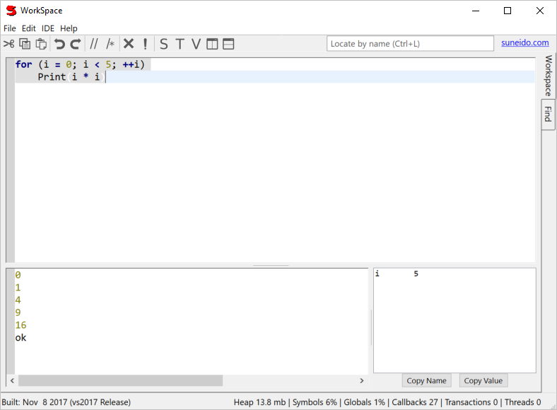
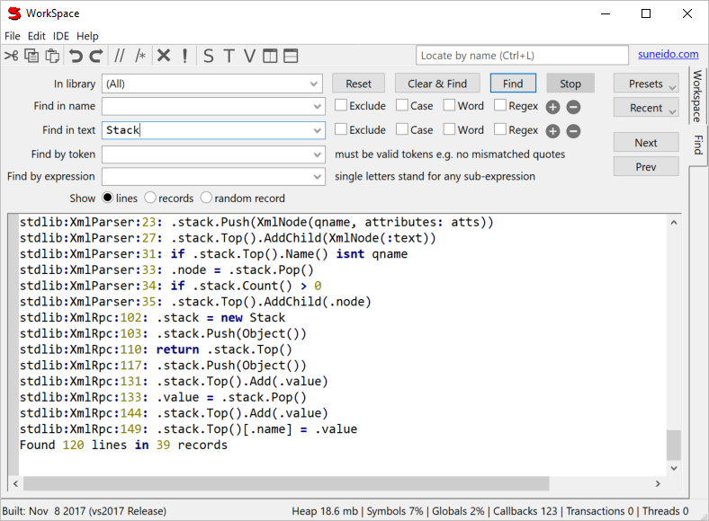

The WorkSpace is used to run fragments of code and to access other tools.
Search libraries for a string, printing either just the names of the matching records, or the actual matching lines.
Double-click on the results to go to them in LibraryView.
Find by Token and Expression are slower so they runs in the background and you can use the Stop button.